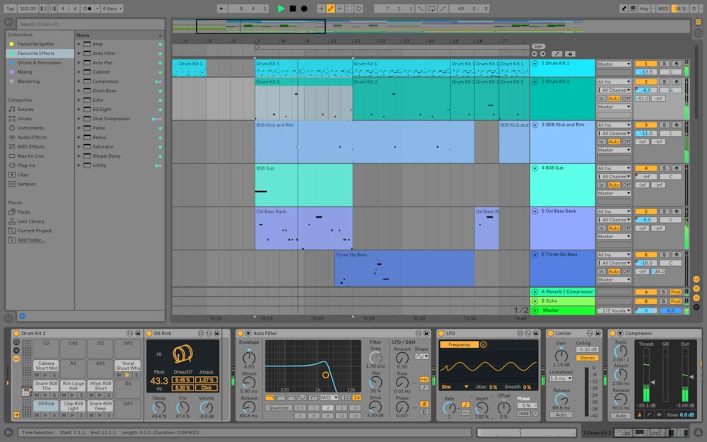

Ableton Live
에이블톤 라이브(Ableton Live)는 macOS, 윈도우용 소프트웨어 뮤직 시퀀서이자 디지털 오디오 워크스테이션이다. 라이브 공연을 위한 악기의 역할을 할뿐 아니라 합성, 녹음, 작곡, 믹싱, 마스터링을 위한 도구로 이용할 수도 있다. 에이블톤 라이브의 최초 버전은 2001년 상용 소프트웨어로 출시되었으며 C++로 작성되어 있다. 라이브 그 자체는 맥스에서 프로토타입 형식은 아니었으나 오디오 장치의 대부분은 그러했다.